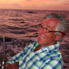

Bernard de Ravignan
Expert Grand Large,
référent de la goëlette "La Cardinale".
Co fondateur de l'enseigne Accastillage Diffusion
6 Transquadra à son actif.
Depuis 7 ans, Béné navigue à bord de "La Cardinale" dans le cadre de l'association "Objectif Grand Sud".
Objectif atteint : 2 Antarctique et au moins une dizaine de Cap Horn au départ de Puerto-Williams !